Vi er en familie fra Ålesund som driver et lite oppdrett av Bichon Havanais. Målet er å avle fram sunne, rasetypiske hunder som lever lenge, er snille og sosiale. Vi har i dag tre havanaiser som bor inne hos oss som fullverdige familiemedlemmer. På denne siden kan du bli bedre kjent med vår lille kennel og hundene våre, og du kan lese om hva du bør tenke på om du vurderer å kjøpe en Bichon Havanais-valp.

Bichon Havanais er en liten, langhåret hund med robust kroppsbygning. Hundene er livlige, nysgjerrige og oppvakte – og har glimt i øyet. De er ofte veldig sosiale, og er kjent for å komme godt overens med barn. Rasen krever ikke så mye, men både kan og bør få lov til å bruke både kropp og hode jevnlig. Les mer om rasen Bichon Havanais her.
Vil du vite mer om Teigestova og hundene våre?
Vi hører gjerne
fra deg.
E-post:
birgitte.heggstad@mimer.no
Tlf: 41761492
Adresse:
Teigestova Kennel v/ Birgitte Heggstad
Breivikveien 133, Ålesund